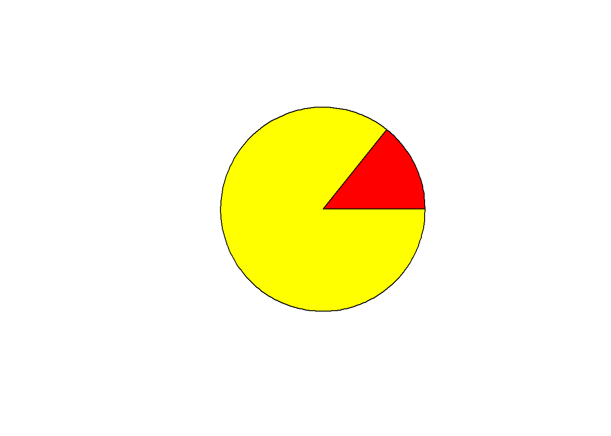
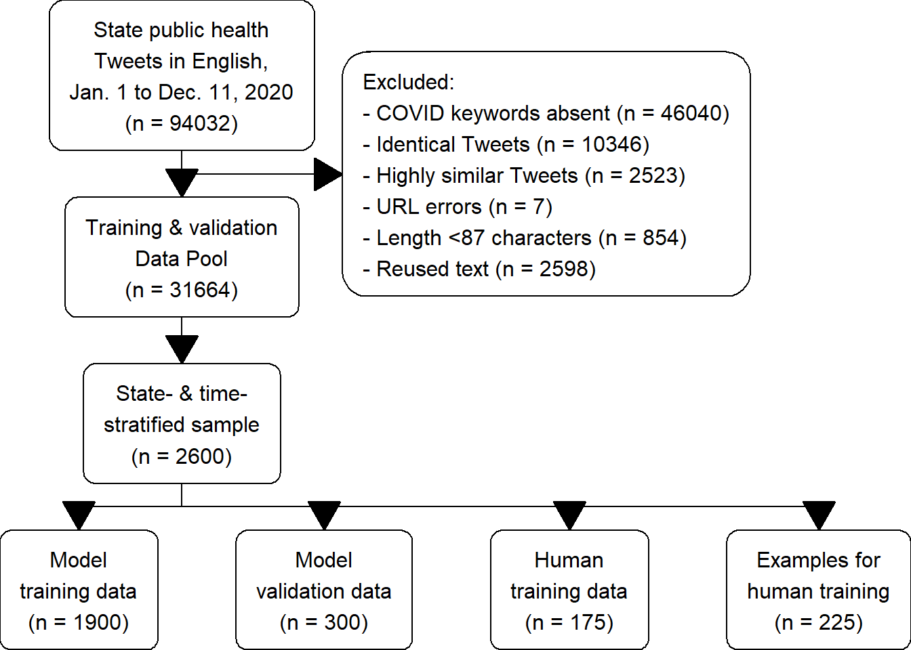

Chapter 5 Conclusion
## Loading required package: gifski## Loading required package: DiagrammeR## Loading required package: Gmisc## Loading required package: Rcpp## Loading required package: htmlTable## Loading required package: glue## Loading required package: grid## Loading required package: magrittr
